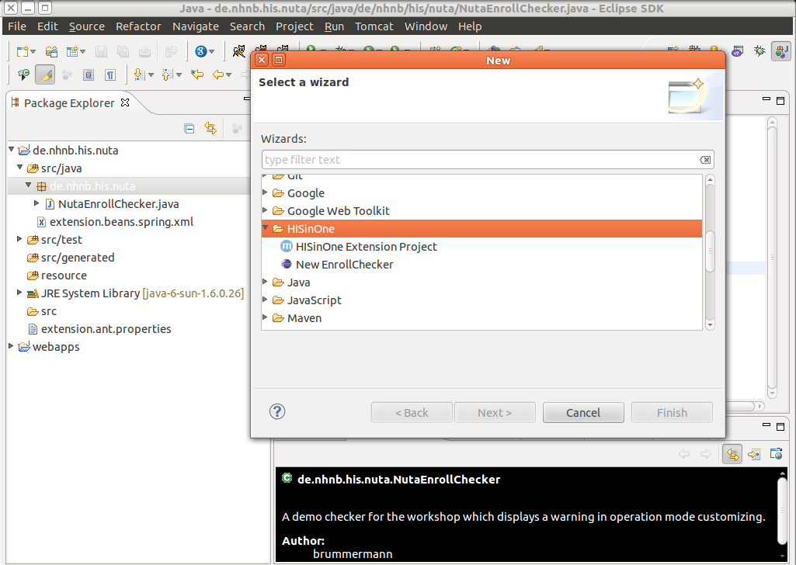
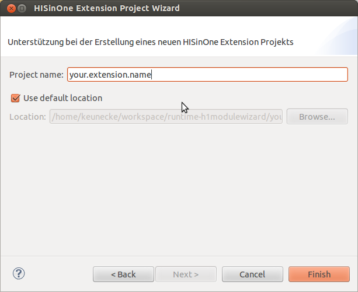
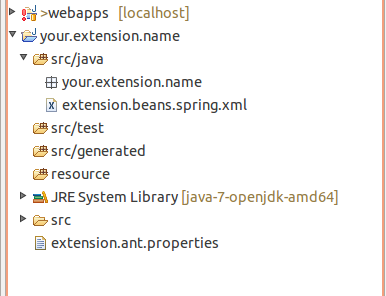
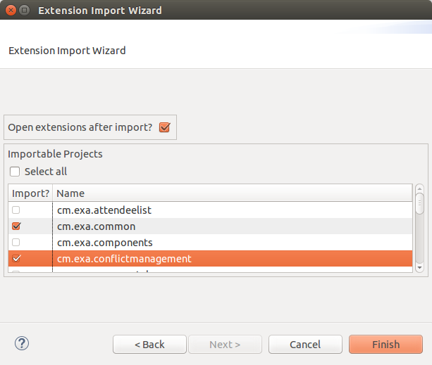
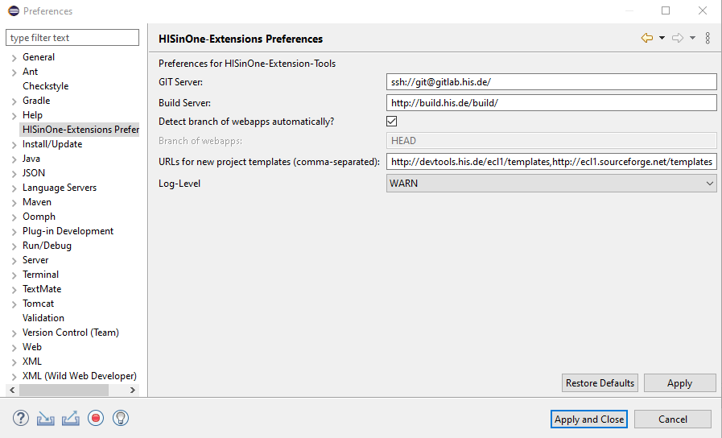

Ecl1: Eclipse Plugin for HISinOne Extensions
Ecl1 is an Eclipse plugin that supports the development of HISinOne extensions. The current released version of the ecl1 toolset is 0.8.9.2019-04-01.
Features
Ecl1 provides a toolset, that supports the development of extensions for the campus management software HISinOne.
- Wizard for new extension projects, that creates an empty project fitting to the required structure
- Import Wizard for existing extension projects
- Wizard to provide individual checkers for the enrollment process
- Visualization of extension points in all projects
- Automated support for projects contributing to an extension point in HISinOne
- Extended Classpath support for embedding infrastructure extensions
- Export wizard to created HIS specific hotfix XML snippets
- Update Check for ecl1 on startup
Requirements
To use the Ecl1 toolset you need Eclipse version 4.6 (Neon) or later and Java 8 or above. It runs both on Windows and Linux systems.
Installation
You can install the current version of the Ecl1 via our update site. Note that since January 2017, Eclipse must be run with a JDK8 >= 8u101 having strong encryption to be able to update from Sourceforge sites.
After you have installed Ecl1, you should have a new category "HISinOne" for new projects, if you try to create a new project for example via pressing Ctrl + N
As alternative option you can download the latest plugin version via sourceforge as an update site archive.
How to use
Ecl1 adds entry to the creation-assistant:
Create a new Extension
To create a new extension select "HISinOne Extension Project" from the category "HISinOne" after selecting New from File menu or pressing Ctrl + N.
After selecting the wizard for a new HISinOne Extension Project, you need to choose a name for the extension you want to develop. Ideally you pick a name that follows the java package naming conventions, as you can see in the following screenshot.

Finally you now have a fully operational HISinOne-extension skeleton. It even has a Git repository prepared for sharing with fellow developers.
Import existing extensions
Invisibility of other extensions is a challenge. We try to tackle this hurdle with a dedicated import wizard for HISinOne-Extensions
In the category HISinOne the wizard Extension Import offers a simple one click way of importing a set of existing extensions into your workspace. 
To make the import suitable to your custom environment, build server as source for available extensions and git server as version control system are configurable. 
Bug and Feature Requests
If you miss a certain detail in the Ecl1 tool set or just found a bug please give us notice via tracker on sourceforge.